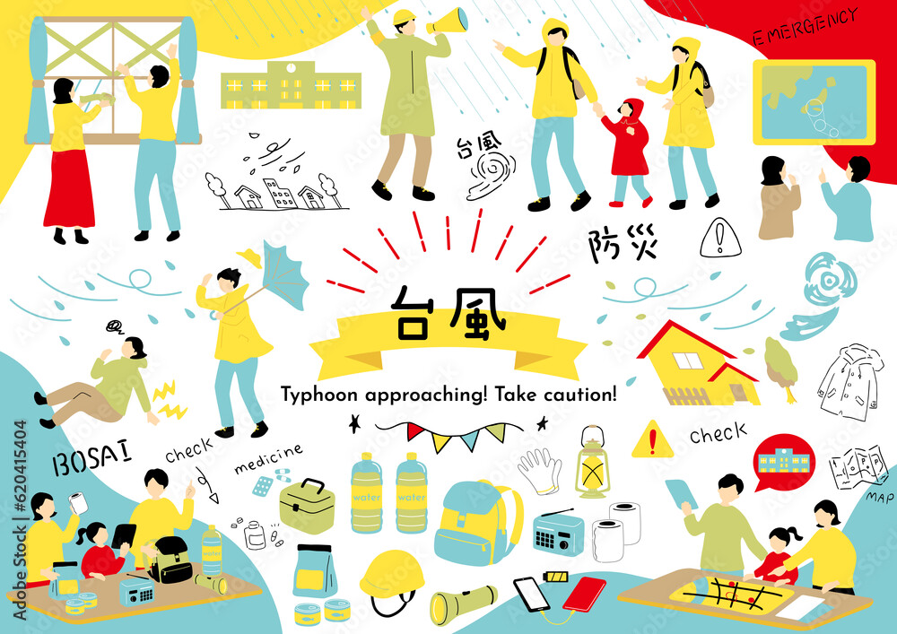
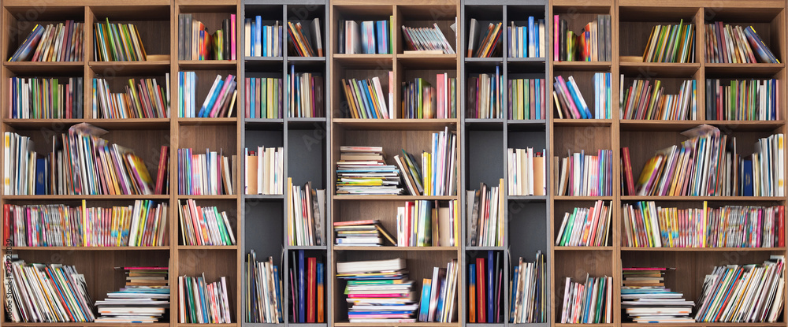
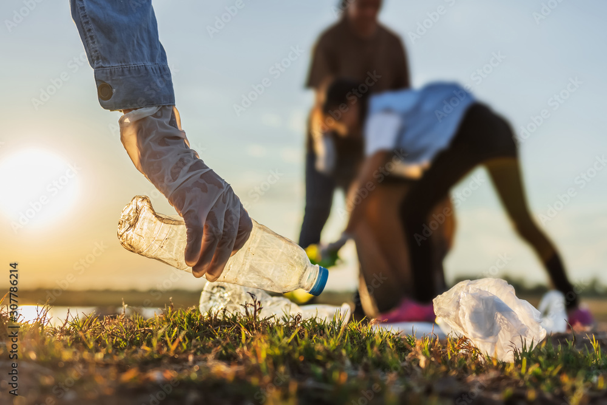
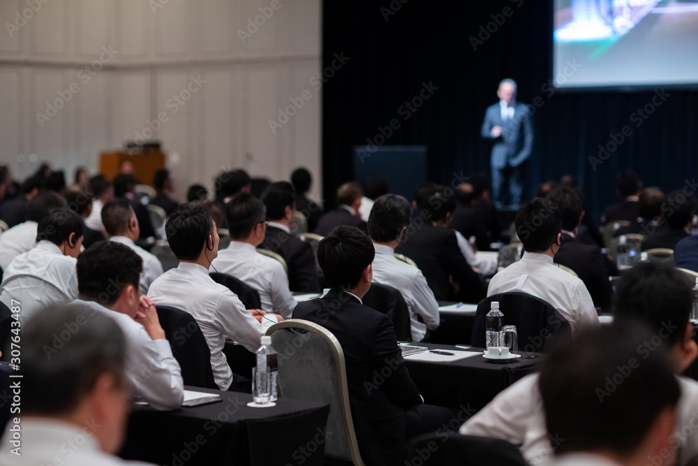
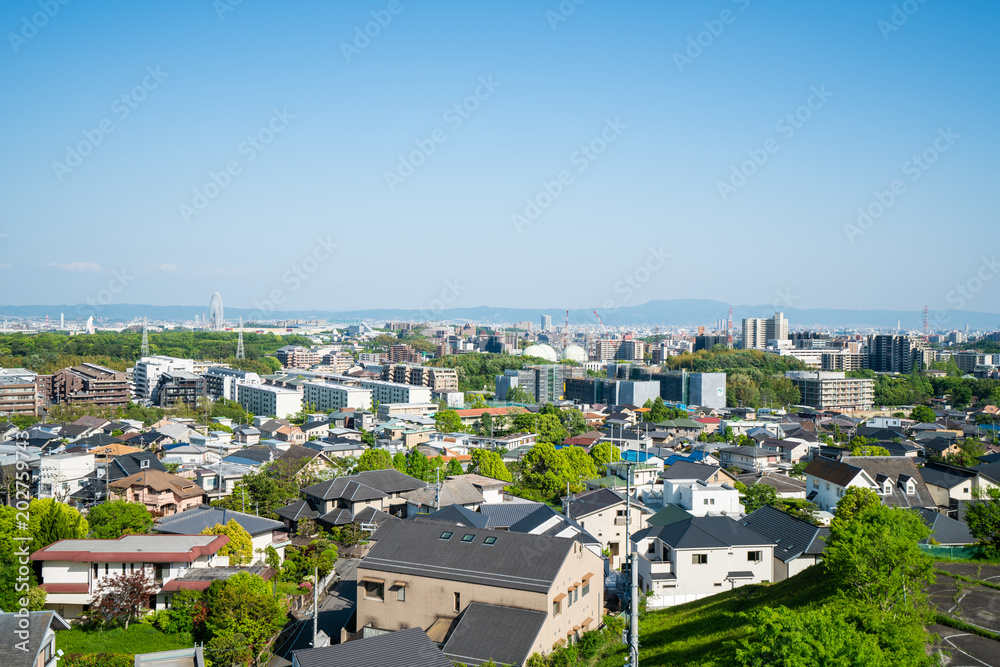

【ダミー】地域と連携した防災学習
地域防災士と連携した避難訓練と防災ワークショップを実施しました。
ACTIVATION
単位PTA活性化事業として行われた、各校の取り組みをご紹介します。
※ 掲載中の記事は、レイアウト確認用のダミーです（各校からの報告・写真は未支給）。
全 6 件

地域防災士と連携した避難訓練と防災ワークショップを実施しました。

図書コーナーの整備と読み聞かせ会を行いました。

児童・保護者・地域住民が一緒になって清掃活動を行いました。
スマートフォンとの付き合い方を、児童と保護者が一緒に学びました。

家庭での学習時間を記録し、学校とPTAが一緒に振り返る取り組みです。

児童会とPTAが一緒に、学校生活のルールについて話し合いました。
条件に一致する記事はありませんでした。キーワードや絞り込みを変えてお試しください。